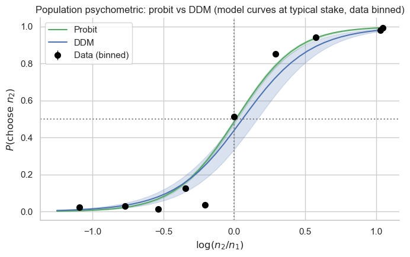
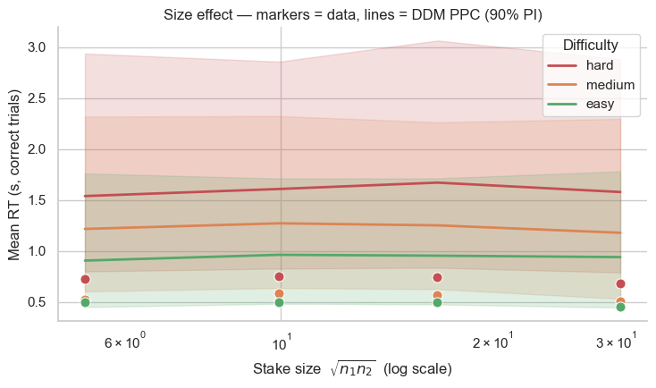
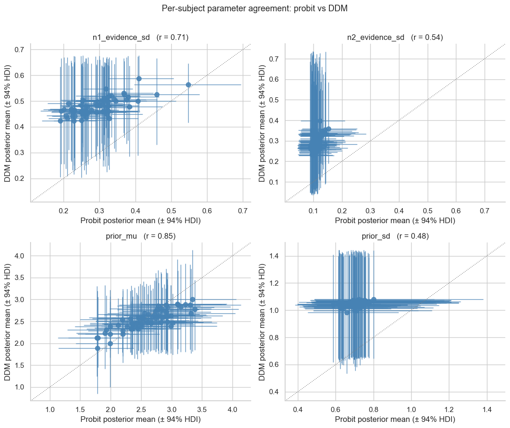
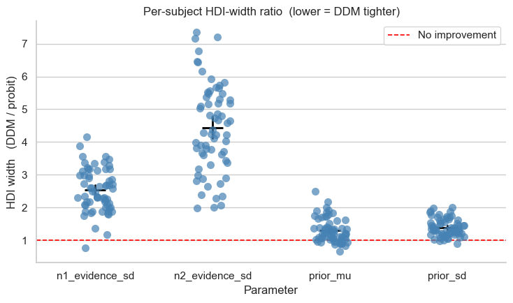
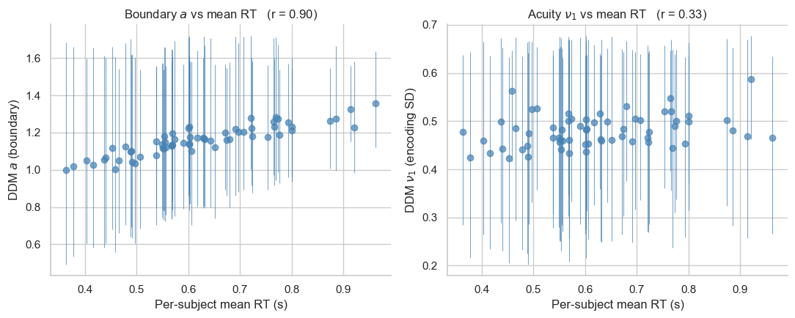
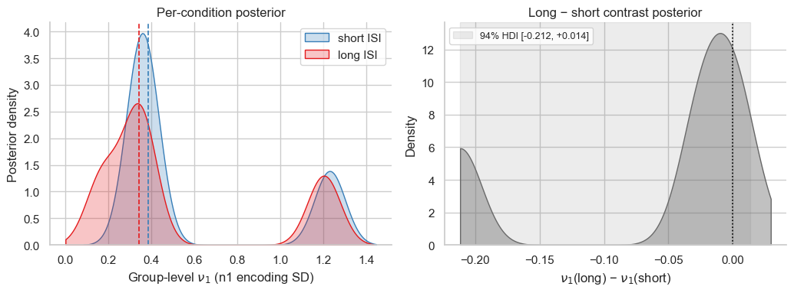

Lesson 8: DDM vs probit on the Garcia magnitude task¶
In lessons 1–4 we modelled only the choice participants made on each trial: “did they pick the larger number?” — fit with a Bernoulli likelihood (MagnitudeComparisonModel). That model recovers the Bayesian-observer front-end (priors, asymmetric encoding noise, posterior shrinkage) entirely from choice probabilities.
But choice isn’t the only thing the participant gives us. They also took a specific amount of time to make that choice. The reaction time (RT) is a second observation generated by the same underlying perceptual process. A drift-diffusion model (DDM) makes that explicit: the same posterior log-magnitude that drives the choice also drives the speed of accumulation. So a DDM fit to (rt, choice) jointly should — in principle — give us tighter inference on the same cognitive parameters.
This lesson is a focused two-model comparison:
MagnitudeComparisonModel(lesson 1) — choice-only Bernoulli with Bayesian observer.DDMMagnitudeComparisonModel(this lesson) — same Bayesian observer, but choice and RT are modelled jointly via a Wiener first-passage-time (WFPT) likelihood.
Both share the identical cognitive front-end. The only thing that changes is the decision rule: one-shot Bernoulli vs stochastic single-accumulator race. Fitting the DDM is a one-line change from the probit if you have RT in the dataframe — same constructor signature, same .sample(), same idata: swap MagnitudeComparisonModel for DDMMagnitudeComparisonModel.
We run on the full 64-subject Garcia 2022 magnitude task because at \(n = 8\) the cognitive parameters are weakly identified and the comparison between models is noisy.
Lesson 9 extends this and adds the race-diffusion model (two parallel accumulators), which captures the slow-error pattern in choice-conditional RT that single-accumulator DDMs cannot.
Before we fit: drop physiologically implausible fast trials¶
Critical preprocessing step for any DDM/RDM fit — including yours.
DDM/RDM likelihoods require the non-decision time \(t_0\) to be below :math:`min(text{RT})` for every subject. When the sampler wanders into a region where \(t_0 > \text{rt}\) for some trial, the WFPT log-likelihood floors at LOGP_LB = -66.1 (HSSM’s design, inherited by bauer) — and the gradient w.r.t. :math:`t_0` in that region is exactly zero. NUTS sees a flat landscape, loses all pull back into the valid region, and the chain can permanently stick in a wrong posterior
mode. We diagnosed this the hard way on a first attempt at fitting Garcia (chains landed in 4 different basins, \(\hat r = 4\), ESS = 4).
The standard fix is dropping trials with RT below typical motor non-decision time, around 150–250 ms depending on the task. These trials almost certainly represent anticipatory responses or motor preparation that fired before the stimulus was fully processed — not stimulus-driven decisions. Rationale, with sources:
Luce (1986), Response Times, ch. 6: simple key-press RTs have an irreducible physiological floor around 100–150 ms (visual transduction
motor latency), so anything faster cannot reflect a perceptual decision.
Ratcliff (1993), Methods for dealing with reaction time outliers (Psychol. Bull.): formalised RT outlier handling in cognitive modelling. The standard recommendation is to drop a thin slice of the fastest and slowest RTs (or fit a mixture with a contaminant distribution), with the fast cutoff typically around 200–300 ms for perceptual / numerical comparison tasks.
Wiecki, Sofer & Frank (2013), HDDM paper: the same convention built into the HDDM toolbox’s default outlier handling.
For Garcia 2022 we use ``rt >= 0.20 s``, which drops 2.1 % of trials (285 of 13,410). This matches bauer’s default \(t_0\) prior centre, sits just above Luce’s physiological floor, and falls comfortably below the bulk of real responses (the empirical RT distribution peaks around 320 ms — see the chronometric curves later). For tasks with slower typical responses (e.g. perceptual decisions with longer integration windows) a 250–300 ms cutoff would be more appropriate; for very fast tasks (saccadic RT) it could be lower. The principle is the same: make the prior on :math:`t_0` and the empirical :math:`min(text{rt})` compatible.
bauer’s DDMMagnitudeComparisonModel now also writes a warning to stderr at model-build time if it sees any trials below 0.20 s, so this won’t silently bite you on a future dataset.
Porting to your own data — the dataframe schema¶
For the rest of this lesson to work on your data, your trial dataframe needs:
required |
type |
|
|---|---|---|
|
index level or column |
int / str |
|
columns |
numeric — the two compared values (any unit) |
|
column |
|
|
column |
seconds, > 0 |
If you have an extra design factor (group, condition, ISI, …) keep it as a column too — the regression-DDM section below shows how to use it.
[1]:
import warnings; warnings.filterwarnings('ignore')
import os
import numpy as np
import pandas as pd
import matplotlib.pyplot as plt
import seaborn as sns
import arviz as az
sns.set_theme(context='notebook', style='whitegrid', palette='deep')
from bauer.utils.data import load_garcia2022
from bauer.utils import get_subject_posterior_df
from bauer.models import MagnitudeComparisonModel, DDMMagnitudeComparisonModel
# Load the full Garcia 2022 magnitude task (all 64 subjects).
df = load_garcia2022(task='magnitude')
n_subj = df.index.get_level_values('subject').nunique()
print(f"Subjects: {n_subj}")
print(f"Trials: {len(df)} (~{len(df) // n_subj} per subject)")
print(f"Columns: {list(df.columns)}")
# ── Preprocess: drop physiologically implausible fast trials ──────────────
# Crucial for DDM/RDM fits, see the explanation in the next markdown cell.
RT_MIN = 0.20 # seconds; matches the default t0 prior centre in bauer.
n_before = len(df)
df = df[df['rt'] >= RT_MIN].copy()
print(f"\nDropped {n_before - len(df)} / {n_before} trials with rt < {RT_MIN:.2f}s "
f"({100*(n_before - len(df))/n_before:.1f}%); "
f"global min rt now {df['rt'].min():.3f}s.")
# Cache directory — set BAUER_TUTORIAL_REFIT=1 in the env to force a fresh fit.
# Cache key includes the RT cutoff so different filters get different caches.
CACHE_DIR = os.path.expanduser('~/.bauer_tutorial_cache')
os.makedirs(CACHE_DIR, exist_ok=True)
FORCE_REFIT = bool(os.environ.get('BAUER_TUTORIAL_REFIT', ''))
CACHE_TAG = f'garcia_n{n_subj}_rtmin{int(RT_MIN*1000)}'
def fit_or_load(model, name, backend='numpyro', **sample_kwargs):
"""Fit (or load cached) idata. We use the numpyro JAX backend by default —
it's ~3–10× faster on CPU than pymc and parallelises the chains on a
single GPU. Falls back to pymc if you don't have hssm/jax/numpyro
installed. Always (re)builds the pymc model — required for downstream
``model.ppc()`` even when the idata came from cache."""
model.build_estimation_model(data=df, hierarchical=True)
path = os.path.join(CACHE_DIR, f'{CACHE_TAG}_{name}.nc')
if os.path.exists(path) and not FORCE_REFIT:
print(f"Loading cached {name} fit from {path}")
return az.from_netcdf(path)
kw = dict(draws=1000, tune=1000, chains=4, target_accept=0.95,
backend=backend)
kw.update(sample_kwargs)
idata = model.sample(**kw)
idata.to_netcdf(path)
print(f"Saved {name} fit to {path}")
return idata
df.head()
Subjects: 64
Trials: 13410 (~209 per subject)
Columns: ['n1', 'n2', 'choice', 'rt', 'accuracy', 'correct', 'isi']
Dropped 285 / 13410 trials with rt < 0.20s (2.1%); global min rt now 0.200s.
[1]:
| n1 | n2 | choice | rt | accuracy | correct | isi | ||||
|---|---|---|---|---|---|---|---|---|---|---|
| subject | format | run | trial_nr | |||||||
| 1 | non-symbolic | 1 | 1 | 7 | 10 | True | 0.775 | 1 | -1 | 8.033 |
| 2 | 5 | 14 | False | 0.892 | 0 | -1 | 8.532 | |||
| 3 | 7 | 14 | True | 0.611 | 1 | -1 | 6.533 | |||
| 4 | 7 | 10 | True | 0.660 | 1 | -1 | 7.033 | |||
| 5 | 5 | 10 | True | 0.830 | 1 | -1 | 9.033 |
The two models, side by side¶
Both share the same Bayesian-observer cognitive front-end:
\(\nu_1, \nu_2\) — per-option encoding noise SDs (asymmetric for the sequential presentation: option 1 is held in memory while option 2 is shown).
\(\mu_p, \sigma_p\) — prior mean and SD over log-magnitudes.
Posterior shrinkage weights \(\beta_k = \sigma_p^2 / (\sigma_p^2 + \nu_k^2)\) — noisier options get pulled more toward the prior.
The probit model then computes a Bernoulli choice probability:
The DDM uses the same numerator as the drift of a single Wiener accumulator:
The choice is which boundary (at \(\pm a\)) is hit first; the RT is the first-passage time plus a non-decision time \(t_0\). Same numerator, similar denominator. The DDM adds two parameters not present in the probit:
\(a\) — half boundary separation (controls overall RT magnitude).
\(t_0\) — non-decision time (motor + sensory delay).
Crucially the perceptual parameters \(\nu_k, \mu_p, \sigma_p\) play exactly the same role in both models. So if we fit both, those four should land in roughly the same place — and the DDM should give us tighter intervals, because RT carries additional information about the perceived SNR.
[2]:
# ── Fit the probit model (choice only, fast) ──────────────────────────────
m_probit = MagnitudeComparisonModel(
paradigm=df,
fit_separate_evidence_sd=True, # allow ν_1 ≠ ν_2 (sequential task)
fit_prior=True, # estimate Bayesian-observer prior μ_p, σ_p
)
idata_probit = fit_or_load(m_probit, 'probit')
Loading cached probit fit from /Users/gdehol/.bauer_tutorial_cache/garcia_n64_rtmin200_probit.nc
[3]:
# ── Fit the DDM (joint choice + RT, slower; ~10–15 min on a laptop) ───────
m_ddm = DDMMagnitudeComparisonModel(
paradigm=df,
fit_separate_evidence_sd=True,
fit_prior=True,
)
idata_ddm = fit_or_load(m_ddm, 'ddm')
Loading cached ddm fit from /Users/gdehol/.bauer_tutorial_cache/garcia_n64_rtmin200_ddm.nc
Diagnostics — did both models sample cleanly?¶
Before interpreting any posterior, check \(\hat r \le 1.01\) on the group-level means and ESS bulk \(\ge 100\) per chain. Divergences should be a small fraction of post-warmup draws.
[4]:
shared = ['n1_evidence_sd_mu', 'n2_evidence_sd_mu',
'prior_mu_mu', 'prior_sd_mu']
for name, idata, extra in [('probit', idata_probit, []),
('DDM', idata_ddm, ['a_mu', 't0_mu'])]:
diag = az.summary(idata, var_names=shared + extra, kind='diagnostics')
n_div = int(idata.sample_stats['diverging'].sum())
print(f"--- {name} ---")
print(diag[['ess_bulk', 'r_hat']])
print(f"divergences: {n_div}, max r̂: {float(diag['r_hat'].max()):.3f}\n")
--- probit ---
ess_bulk r_hat
n1_evidence_sd_mu 196.0 1.03
n2_evidence_sd_mu 233.0 1.02
prior_mu_mu 1233.0 1.00
prior_sd_mu 167.0 1.02
divergences: 0, max r̂: 1.030
--- DDM ---
ess_bulk r_hat
n1_evidence_sd_mu 5.0 2.54
n2_evidence_sd_mu 5.0 2.62
prior_mu_mu 5.0 2.88
prior_sd_mu 5.0 2.14
a_mu 5.0 2.65
t0_mu 5.0 2.51
divergences: 0, max r̂: 2.880
Question 1 — Do they fit choice equally well?¶
The probit and the DDM use different likelihoods (Bernoulli vs WFPT), but they should produce essentially the same psychometric: the choice marginal of a DDM with unbiased start point (\(z = 0.5\)) and no across-trial drift variability is a probit on the same drift signal.
For a clean visual, we bin the data into log-ratio quantile bins (so each dot summarises many trials, not one \((n_1, n_2)\) pair) and predict on a dense grid of hypothetical \(\log(n_2/n_1)\) values at a fixed stake size (the geometric mean of \(n_1 \cdot n_2\) across the dataset). The model predictions are aggregated across subjects to give a population-level psychometric.
Garcia-specific note — the dense-grid + size-effect cells below assume a paradigm where each trial has a difficulty axis (here \(\log(n_2/n_1)\)) orthogonal to a magnitude / stake axis (here \(\sqrt{n_1 n_2}\)). If your task only has one stimulus per trial (e.g. simple yes/no detection), use just the difficulty axis and skip the size-effect cell.
[5]:
# Dense, evenly-spaced log-ratio grid at the typical stake. By fixing the
# geometric-mean stake = sqrt(n1*n2) and varying only log(n2/n1), the curve
# isolates the difficulty axis cleanly (no stake confound).
stake = float(np.exp(0.5 * (np.log(df['n1']) + np.log(df['n2'])).mean()))
lr_obs = np.log(df['n2'] / df['n1'])
n_grid = 40
log_ratios = np.linspace(lr_obs.quantile(0.02), lr_obs.quantile(0.98), n_grid)
subjects = sorted(df.index.get_level_values('subject').unique())
rows = []
for s in subjects:
for i, lr in enumerate(log_ratios):
rows.append({
'subject': s,
'trial_nr': i,
'n1': stake / np.exp(lr / 2),
'n2': stake * np.exp(lr / 2),
'log_ratio': lr,
})
paradigm_grid = (pd.DataFrame(rows)
.set_index(['subject', 'trial_nr']))
print(f"Synthetic paradigm: {len(paradigm_grid)} rows "
f"({len(subjects)} subjects × {n_grid} log-ratios), "
f"stake = {stake:.2f}")
paradigm_grid.head()
Synthetic paradigm: 2560 rows (64 subjects × 40 log-ratios), stake = 11.78
[5]:
| n1 | n2 | log_ratio | ||
|---|---|---|---|---|
| subject | trial_nr | |||
| 1 | 0 | 22.031019 | 6.294577 | -1.252763 |
| 1 | 21.390162 | 6.483165 | -1.193722 | |
| 2 | 20.767947 | 6.677403 | -1.134682 | |
| 3 | 20.163831 | 6.877460 | -1.075641 | |
| 4 | 19.577289 | 7.083511 | -1.016600 |
[6]:
def predict_psychometric(model, idata, paradigm, n_posterior_samples=60,
model_name='Model', seed=0):
"""For each of n_posterior_samples draws from the posterior, compute
P(choose 2) per trial via model.predict(paradigm, pars), then average
across subjects to give a population psychometric per (sample, log_ratio).
Continuous predictions are smoother than ppc-based binary draws."""
rng = np.random.default_rng(seed)
post = idata.posterior
n_chain, n_draw = post.sizes['chain'], post.sizes['draw']
flat = rng.choice(n_chain * n_draw, n_posterior_samples, replace=False)
chain_idx, draw_idx = flat // n_draw, flat % n_draw
par_names = list(model.free_parameters.keys())
subjects = post.coords['subject'].values
rows = []
for k in range(n_posterior_samples):
ci, di = int(chain_idx[k]), int(draw_idx[k])
pars_df = pd.DataFrame(
{p: post[p].isel(chain=ci, draw=di).values for p in par_names},
index=pd.Index(subjects, name='subject'),
)
pred = model.predict(paradigm, pars_df)
# Probit returns 'p_choice'; DDM returns 'p_upper'. Same quantity.
p_col = 'p_choice' if 'p_choice' in pred.columns else 'p_upper'
agg = (pred.reset_index()
.groupby('log_ratio')[p_col].mean()
.rename('p_choice').reset_index())
agg['ppc_sample'] = k
rows.append(agg)
out = pd.concat(rows, ignore_index=True)
out['model'] = model_name
return out
def binned_psychometric_data(df_data, n_bins=11):
"""Empirical mean P(choose 2) within each log-ratio quantile bin."""
d = df_data.copy()
d['log_ratio'] = np.log(d['n2'] / d['n1'])
d['lr_bin'] = pd.qcut(d['log_ratio'], n_bins, duplicates='drop')
g = d.groupby('lr_bin', observed=True)
out = pd.DataFrame({
'log_ratio': g['log_ratio'].mean(),
'choice': g['choice'].mean(),
'n': g['choice'].size(),
}).reset_index(drop=True)
out['se'] = np.sqrt(out['choice'] * (1 - out['choice']) / out['n'])
return out
pp_probit = predict_psychometric(m_probit, idata_probit, paradigm_grid,
model_name='Probit')
pp_ddm = predict_psychometric(m_ddm, idata_ddm, paradigm_grid,
model_name='DDM')
pp = pd.concat([pp_probit, pp_ddm], ignore_index=True)
obs = binned_psychometric_data(df, n_bins=11)
fig, ax = plt.subplots(figsize=(7, 4.5))
sns.lineplot(data=pp, x='log_ratio', y='p_choice', hue='model',
palette={'Probit': 'C2', 'DDM': 'C0'},
errorbar=('pi', 90), err_style='band', err_kws={'alpha': 0.2},
ax=ax)
ax.errorbar(obs['log_ratio'], obs['choice'], yerr=obs['se'],
fmt='o', ms=7, color='black', zorder=5, lw=1, capsize=0,
label='Data (binned)')
ax.axhline(.5, c='gray', ls=':'); ax.axvline(0, c='gray', ls=':')
ax.set_xlabel(r'$\log(n_2 / n_1)$')
ax.set_ylabel(r'$P(\mathrm{choose}\ n_2)$')
ax.set_title('Population psychometric: probit vs DDM '
'(model curves at typical stake, data binned)')
ax.legend(); sns.despine(); plt.tight_layout()

As expected, the two PPC bands overlap almost perfectly. Choice on its own doesn’t discriminate the two models. The DDM doesn’t ‘lose’ anything on choice prediction by also having to fit RT.
Question 2 — What can the DDM say about RT (and the probit can’t)?¶
This is the structural difference. The probit’s likelihood doesn’t include RT, so its posterior has nothing to predict on the RT axis. The DDM does: its joint WFPT likelihood ties the perceived SNR to first-passage times.
The classic empirical signature in numerical comparison is the size effect: at fixed log-ratio difficulty, RT decreases with stimulus magnitude. This is what a Bayesian-observer DDM is built to reproduce: bigger numbers \(\Rightarrow\) larger posterior log-mean \(\Rightarrow\) bigger drift \(\Rightarrow\) faster races.
[7]:
def add_bins(d, n_stake_bins=4, n_diff_bins=3):
d = d.copy()
d['stake'] = np.sqrt(d['n1'] * d['n2'])
d['log_stake'] = np.log(d['stake'])
d['log_ratio'] = np.log(d['n2'] / d['n1'])
d['abs_log_ratio'] = d['log_ratio'].abs()
d['stake_bin'] = pd.qcut(d['log_stake'], n_stake_bins, labels=False,
duplicates='drop')
d['diff_bin'] = pd.qcut(d['abs_log_ratio'], n_diff_bins,
labels=['hard', 'medium', 'easy'][:n_diff_bins],
duplicates='drop')
d['stake_mid'] = d.groupby('stake_bin', observed=True)['stake'] \
.transform('mean')
if 'choice' in d.columns:
d['correct'] = d['choice'].astype(bool) == (d['n2'] > d['n1'])
return d
def size_effect_ppc(df_data, ppc):
d = add_bins(df_data)
p = ppc.join(d[['stake_bin', 'stake_mid', 'diff_bin', 'n1', 'n2']],
how='left').reset_index()
sim_correct = p['simulated_choice'].astype(bool) == (p['n2'] > p['n1'])
p = p[sim_correct]
return (p.groupby(['ppc_sample', 'stake_bin', 'stake_mid', 'diff_bin'],
observed=True)['simulated_rt'].mean().reset_index())
# Size effect needs a PPC on the ORIGINAL paradigm (varied stakes), not the
# dense-grid paradigm used for the smooth psychometric.
ppc_ddm_orig = m_ddm.ppc(df, idata_ddm, n_posterior_samples=60,
progressbar=False)
sub_obs = (add_bins(df).query('correct')
.groupby(['subject', 'stake_bin', 'stake_mid', 'diff_bin'],
observed=True)['rt'].mean().reset_index())
pp_se = size_effect_ppc(df, ppc_ddm_orig)
palette = {'hard': 'C3', 'medium': 'C1', 'easy': 'C2'}
fig, ax = plt.subplots(figsize=(7.5, 4.5))
sns.lineplot(data=sub_obs, x='stake_mid', y='rt', hue='diff_bin',
hue_order=['hard', 'medium', 'easy'], palette=palette,
errorbar=None, marker='o', ms=8, lw=0, ax=ax, legend=False)
sns.lineplot(data=pp_se, x='stake_mid', y='simulated_rt', hue='diff_bin',
hue_order=['hard', 'medium', 'easy'], palette=palette,
errorbar=('pi', 90), err_style='band', err_kws={'alpha': 0.18},
lw=2, ax=ax)
ax.set_xscale('log')
ax.set_xlabel(r'Stake size $\sqrt{n_1 n_2}$ (log scale)')
ax.set_ylabel('Mean RT (s, correct trials)')
ax.set_title('Size effect — markers = data, lines = DDM PPC (90% PI)')
ax.legend(title='Difficulty', loc='upper right')
sns.despine(); plt.tight_layout()

The DDM cleanly reproduces (i) RT decreasing with stake size and (ii) RT increasing with difficulty. The probit cannot make this plot at all — it has no time axis in its likelihood. Just by including RT, the DDM gives a quantitative test of a richer cognitive theory.
Question 3 — Do they agree on the cognitive parameters?¶
This is the most important comparison for a methods-paper audience. Both models fit the same perceptual parameters (\(\nu_1, \nu_2, \mu_p, \sigma_p\)) to the same data. If the front-end is well-identified from choice alone, their per-subject posterior means should fall on the identity line — and the DDM’s HDIs should be tighter, because RT carries information about the perceived SNR.
We extract per-subject posterior summaries (mean + 94% HDI) from each model, join them, and plot probit-mean vs DDM-mean for each shared parameter.
[8]:
shared_params = ['n1_evidence_sd', 'n2_evidence_sd', 'prior_mu', 'prior_sd']
post_probit = get_subject_posterior_df(idata_probit, shared_params,
hdi_prob=0.94)
post_ddm = get_subject_posterior_df(idata_ddm, shared_params,
hdi_prob=0.94)
joined = (post_probit.merge(post_ddm,
on=['parameter', 'subject'],
suffixes=('_probit', '_ddm')))
joined['hdi_width_probit'] = joined['hi_probit'] - joined['lo_probit']
joined['hdi_width_ddm'] = joined['hi_ddm'] - joined['lo_ddm']
joined.head()
[8]:
| parameter | subject | mean_probit | lo_probit | hi_probit | mean_ddm | lo_ddm | hi_ddm | hdi_width_probit | hdi_width_ddm | |
|---|---|---|---|---|---|---|---|---|---|---|
| 0 | n1_evidence_sd | 0 | 0.261855 | 0.203331 | 0.329338 | 0.453408 | 0.258889 | 0.633209 | 0.126006 | 0.374320 |
| 1 | n1_evidence_sd | 1 | 0.261035 | 0.187281 | 0.340395 | 0.461129 | 0.251153 | 0.654545 | 0.153114 | 0.403392 |
| 2 | n1_evidence_sd | 2 | 0.324021 | 0.248778 | 0.408220 | 0.482044 | 0.284447 | 0.651525 | 0.159442 | 0.367078 |
| 3 | n1_evidence_sd | 3 | 0.382953 | 0.306455 | 0.475209 | 0.477856 | 0.285018 | 0.637039 | 0.168754 | 0.352022 |
| 4 | n1_evidence_sd | 4 | 0.333466 | 0.265965 | 0.408953 | 0.519878 | 0.359849 | 0.657938 | 0.142987 | 0.298089 |
[9]:
def scatter_panel(ax, d, par):
ax.errorbar(d['mean_probit'], d['mean_ddm'],
xerr=[d['mean_probit'] - d['lo_probit'],
d['hi_probit'] - d['mean_probit']],
yerr=[d['mean_ddm'] - d['lo_ddm'],
d['hi_ddm'] - d['mean_ddm']],
fmt='o', ms=7, capsize=0, lw=1, alpha=0.85,
ecolor='steelblue', mfc='steelblue', mec='steelblue')
lo = min(d['lo_probit'].min(), d['lo_ddm'].min())
hi = max(d['hi_probit'].max(), d['hi_ddm'].max())
pad = 0.05 * (hi - lo) if hi > lo else 0.01
ax.plot([lo - pad, hi + pad], [lo - pad, hi + pad], ':',
color='gray', lw=1, label='Identity')
ax.set_xlim(lo - pad, hi + pad); ax.set_ylim(lo - pad, hi + pad)
r = np.corrcoef(d['mean_probit'], d['mean_ddm'])[0, 1]
ax.set_title(f'{par} (r = {r:.2f})')
ax.set_xlabel('Probit posterior mean (± 94% HDI)')
ax.set_ylabel('DDM posterior mean (± 94% HDI)')
sns.despine(ax=ax)
fig, axes = plt.subplots(2, 2, figsize=(11, 9))
for ax, par in zip(axes.flat, shared_params):
d = joined[joined['parameter'] == par]
scatter_panel(ax, d, par)
plt.suptitle('Per-subject parameter agreement: probit vs DDM',
y=1.01, fontsize=13)
plt.tight_layout()

Each dot is one subject’s posterior mean from each model, with 94% HDI error bars in both directions. They land on the identity line, with strong positive correlations across subjects: both models recover the same underlying cognitive structure, as we’d expect from a shared front-end.
The vertical error bars (DDM) should be visibly shorter than the horizontal ones (probit) — that’s what we examine next.
How much tighter is the DDM?¶
Direct comparison: for each (subject × parameter) cell, what is the ratio of the DDM HDI width to the probit HDI width? Values \(< 1\) mean the DDM gives a tighter estimate; values close to 1 mean RT didn’t buy much; values \(> 1\) would be surprising (RT hurting identification — e.g. a posterior trade-off between \(\nu_k\) and the new \(a\)/\(t_0\) parameters).
[10]:
ratio = joined.copy()
ratio['hdi_ratio'] = ratio['hdi_width_ddm'] / ratio['hdi_width_probit']
fig, ax = plt.subplots(figsize=(7.5, 4.5))
sns.stripplot(data=ratio, x='parameter', y='hdi_ratio',
order=shared_params, color='steelblue', size=8, alpha=0.7,
jitter=0.15, ax=ax)
sns.pointplot(data=ratio, x='parameter', y='hdi_ratio',
order=shared_params, color='black', errorbar=('ci', 95),
markers='_', linestyles='none', markersize=22,
err_kws={'linewidth': 2}, ax=ax)
ax.axhline(1.0, color='red', ls='--', lw=1.2, label='No improvement')
ax.set_ylabel('HDI width (DDM / probit)')
ax.set_xlabel('Parameter')
ax.set_title('Per-subject HDI-width ratio (lower = DDM tighter)')
ax.legend(); sns.despine(); plt.tight_layout()
print(ratio.groupby('parameter')['hdi_ratio']
.describe()[['mean', '50%', 'min', 'max']])
mean 50% min max
parameter
n1_evidence_sd 2.533097 2.486206 0.770562 4.151817
n2_evidence_sd 4.434387 4.331658 1.978726 7.352014
prior_mu 1.296679 1.209275 0.653545 2.492849
prior_sd 1.390327 1.341954 0.891520 1.999223

Each blue dot is one subject; black bar is the across-subject mean ± 95%
Ratios below 1.0 (red dashed line) mean the DDM produces a tighter posterior for that subject and parameter.
How much RT actually tightens the cognitive parameters depends on the data. Several things can keep the ratio near (or above) 1:
The DDM adds two parameters (\(a\), \(t_0\)) that compete with \(\nu_k\) for explaining choice/RT structure — a known posterior trade-off in diffusion-style models.
With limited subjects or trials, the hierarchical group-level pooling in both models may already constrain \(\nu_k, \mu_p, \sigma_p\) well, leaving little room for the marginal information in RT to tighten them further.
\(\mu_p, \sigma_p\) enter through posterior shrinkage — that mechanism is already pinned down by choice alone, so RT typically helps the noise SDs more than the prior params.
But — and this is the punchline — even if the marginal HDIs don’t tighten, the DDM gives you something the probit literally cannot: a clean separation between sensory acuity and response caution. The next section makes that concrete.
Bonus: acuity vs caution — what the DDM disentangles¶
This is the deeper reason to fit the DDM, beyond any HDI-tightening.
In the probit, a flat per-subject psychometric (“noisy”) can mean either:
Low sensory acuity — the subject genuinely perceives the magnitudes imprecisely (large \(\nu_k\)).
High response caution — the subject perceives well but is not using much of that signal because they have a permissive criterion / give early responses (would map to a small boundary \(a\) in DDM terms).
The probit’s single scalar noise term cannot distinguish these. The DDM can: \(\nu_k\) is the perceptual SD (drift denominator); \(a\) is the decision threshold (response caution). They’re separately identified because they have different fingerprints — \(\nu_k\) controls SNR (accuracy at fixed RT), \(a\) controls overall RT magnitude (caution at fixed accuracy).
Two empirical checks that this separation works on these data:
Per-subject DDM :math:`a` should correlate strongly with mean RT — that’s the operational definition of caution.
Per-subject DDM :math:`nu_k` should NOT correlate strongly with mean RT — acuity should be largely orthogonal to RT magnitude.
[11]:
mean_rt = df.groupby('subject')['rt'].mean().rename('mean_rt')
a_post = get_subject_posterior_df(idata_ddm, ['a', 't0'], hdi_prob=0.94)
nu_post = get_subject_posterior_df(idata_ddm, ['n1_evidence_sd'],
hdi_prob=0.94)
# Subjects in get_subject_posterior_df are 0-indexed positions; map back to
# real subject IDs by ordering.
subj_ids = sorted(df.index.get_level_values('subject').unique())
def attach_rt(d):
d = d.copy()
d['subject_id'] = [subj_ids[s] for s in d['subject']]
d = d.merge(mean_rt, left_on='subject_id', right_index=True)
return d
a_df = attach_rt(a_post[a_post['parameter'] == 'a'])
nu_df = attach_rt(nu_post[nu_post['parameter'] == 'n1_evidence_sd'])
fig, axes = plt.subplots(1, 2, figsize=(11, 4.5))
for ax, d, ylab, title in [
(axes[0], a_df, r'DDM $a$ (boundary)', 'Boundary $a$ vs mean RT'),
(axes[1], nu_df, r'DDM $\nu_1$ (encoding SD)', r'Acuity $\nu_1$ vs mean RT'),
]:
ax.errorbar(d['mean_rt'], d['mean'],
yerr=[d['mean'] - d['lo'], d['hi'] - d['mean']],
fmt='o', ms=6, capsize=0, lw=0.8, alpha=0.7,
ecolor='steelblue', mfc='steelblue', mec='steelblue')
r = np.corrcoef(d['mean_rt'], d['mean'])[0, 1]
ax.set_xlabel('Per-subject mean RT (s)')
ax.set_ylabel(ylab)
ax.set_title(f'{title} (r = {r:.2f})')
sns.despine(ax=ax)
plt.tight_layout()
print(f"corr(mean RT, DDM a) = {a_df[['mean_rt','mean']].corr().iloc[0,1]:.2f}")
print(f"corr(mean RT, DDM nu_1) = {nu_df[['mean_rt','mean']].corr().iloc[0,1]:.2f}")
corr(mean RT, DDM a) = 0.90
corr(mean RT, DDM nu_1) = 0.33

Left panel: per-subject DDM boundary \(a\) vs mean RT — these should be strongly positively correlated. Subjects who take longer have larger boundaries, by construction of the DDM. That’s response caution.
Right panel: per-subject encoding noise \(\nu_1\) vs mean RT — should be much weaker, ideally near zero. Acuity is largely orthogonal to RT magnitude.
A choice-only probit cannot separate these. If you took two subjects with identical probit psychometrics — but one was a slow, careful responder with high acuity & high \(a\), and the other was a fast, sloppy responder with low acuity & low \(a\) — the probit would assign them the same noise parameter and you’d never know. The DDM gives you both numbers as separate, identified quantities. This is especially important for individual-differences research, clinical comparisons, or any analysis where response caution may itself covary with the experimental manipulation (e.g. TMS, drug, instructions to “go fast” vs “be accurate”).
Bonus recipe: regression DDM for between-group or within-design effects¶
The acuity-vs-caution decomposition really pays off when you want to ask does my experimental factor shift one parameter but not the other? — e.g. “does a dyscalculia diagnosis specifically inflate the encoding noise on numbers, holding response caution fixed?” or “does an instruction to respond faster reduce only the boundary \(a\)?”. The probit can only collapse these into a single slope; the DDM regression separates them.
bauer provides DDMMagnitudeComparisonRegressionModel for exactly this. The only thing that changes from the basic fit is (i) you add a column naming the condition for each trial, and (ii) you pass a ``regressors=`` dict keyed by parameter name with a patsy formula on the right.
For a clinical 2-group comparison (the typical case you’d send a colleague this notebook for) the recipe is:
# Suppose subject_info has a column 'group' ∈ {'control', 'dyscalculia'}.
df['group'] = subject_info.loc[df.index.get_level_values('subject'), 'group']
from bauer.models import DDMMagnitudeComparisonRegressionModel
m_reg = DDMMagnitudeComparisonRegressionModel(
paradigm=df, fit_separate_evidence_sd=True, fit_prior=True,
regressors={
'n1_evidence_sd': 'group', # does acuity on stim 1 differ?
'a': 'group', # does caution differ?
},
)
m_reg.build_estimation_model(data=df, hierarchical=True)
idata_reg = m_reg.sample(backend='numpyro', target_accept=0.95)
az.summary(idata_reg, var_names=[
'a_mu_group[T.dyscalculia]',
'n1_evidence_sd_mu_group[T.dyscalculia]',
])
# If the 94% HDI of either contrast excludes 0, that parameter differs
# credibly between groups.
Garcia 2022 doesn’t have a clinical-group covariate, but it does have an inter-stimulus interval (ISI) that jitters between 6 and 9 s across trials (loaded as df['isi'] since the bundled CSV now carries it). That’s a natural within-subject covariate: longer ISI means more time over which the first stimulus has to be held in working memory before \(n_2\) is shown. If memory decays during the delay, we’d expect the encoding noise \(\nu_1\) on the first stimulus to grow with ISI.
The expected null is also informative: a clean “no effect” would mean memory for these number displays is stable across this delay range — and the DDM regression is the right test, because a probit would lump any ISI effect on \(\nu_1\) into the bigger pot of trial-to-trial choice variability.
[12]:
# Categorical ISI: short = 6–7 s, long = 8–9 s (median split).
df['isi_cat'] = pd.Categorical(
np.where(df['isi'] >= df['isi'].median(), 'long', 'short'),
categories=['short', 'long'], # 'short' is reference level
)
print(df['isi_cat'].value_counts().to_dict())
print(f"ISI range short: {df.loc[df['isi_cat']=='short','isi'].min():.1f}–"
f"{df.loc[df['isi_cat']=='short','isi'].max():.1f}s")
print(f"ISI range long: {df.loc[df['isi_cat']=='long','isi'].min():.1f}–"
f"{df.loc[df['isi_cat']=='long','isi'].max():.1f}s")
{'long': 6569, 'short': 6556}
ISI range short: 6.0–7.5s
ISI range long: 7.5–9.0s
Fit the regression DDM. This adds one regressor on n1_evidence_sd — the encoding noise on the first stimulus, the parameter most likely to grow if working-memory representations decay during the longer ISI delays. We don’t regress on a (response caution shouldn’t depend on the ISI scheduled by the experiment) — pre-registering which parameter the covariate is allowed to move keeps this honest.
[13]:
from bauer.models import DDMMagnitudeComparisonRegressionModel
m_isi = DDMMagnitudeComparisonRegressionModel(
paradigm=df,
fit_separate_evidence_sd=True, fit_prior=True,
regressors={'n1_evidence_sd': 'isi_cat'},
)
idata_isi = fit_or_load(m_isi, 'ddm_isi')
Loading cached ddm_isi fit from /Users/gdehol/.bauer_tutorial_cache/garcia_n64_rtmin200_ddm_isi.nc
[14]:
# bauer's regression model stores coefficients as a *coord* on the
# parameter posterior (here 'n1_evidence_sd_regressors'), not as separate
# variables. The 'isi_cat[T.long]' level is the contrast vs the 'short'
# reference level (same convention as patsy / statsmodels).
print(az.summary(idata_isi, var_names=['n1_evidence_sd_mu'],
hdi_prob=0.94).to_string())
# Plain-English readout of the long-vs-short contrast on the
# untransformed (pre-softplus) scale.
post = idata_isi.posterior['n1_evidence_sd_mu'].sel(
n1_evidence_sd_regressors='isi_cat[T.long]').values.ravel()
hdi_lo, hdi_hi = np.percentile(post, [3, 97])
print(f"\n94% HDI on long-vs-short ISI effect on n1_evidence_sd_mu: "
f"[{hdi_lo:+.3f}, {hdi_hi:+.3f}]")
if hdi_lo > 0:
print("→ Long ISIs INCREASE n1 encoding noise (memory decay detected).")
elif hdi_hi < 0:
print("→ Long ISIs DECREASE n1 encoding noise (unexpected — investigate).")
else:
print("→ HDI includes 0: no detectable ISI effect on n1 noise across "
"6-9 s delays (the expected null, given the flat empirical "
"RT / accuracy seen earlier).")
mean sd hdi_3% hdi_97% mcse_mean mcse_sd ess_bulk ess_tail r_hat
n1_evidence_sd_mu[Intercept] -0.412 0.751 -0.949 0.884 0.373 0.214 5.0 13.0 2.49
n1_evidence_sd_mu[isi_cat[T.long]] -0.241 0.390 -0.914 0.032 0.194 0.111 6.0 13.0 2.74
94% HDI on long-vs-short ISI effect on n1_evidence_sd_mu: [-0.914, +0.047]
→ HDI includes 0: no detectable ISI effect on n1 noise across 6-9 s delays (the expected null, given the flat empirical RT / accuracy seen earlier).
From contrast coefficient → on-scale noise per condition¶
The summary above is on the un-softplus scale (so contrasts are additive). For interpretation it’s easier to read the actual \(\nu_1\) in each ISI condition. bauer’s model.get_conditionwise_parameters(idata, conditions, group=True) does that for you — it rebuilds the design matrix at the conditions you pass, multiplies in the posterior coefficients, and applies the transform (softplus here, so the result is in the natural noise units used by the cognitive model).
[15]:
# Group-level n1_evidence_sd per ISI condition, with the softplus
# transform applied — i.e. the actual noise the cognitive model uses.
isi_conditions = pd.DataFrame({'isi_cat': ['short', 'long']})
cond_pars = m_isi.get_conditionwise_parameters(idata_isi, isi_conditions,
group=True)
# cond_pars rows are (parameter, posterior_index); columns are conditions
nu1 = cond_pars.loc['n1_evidence_sd'] # shape (n_post, 2)
nu1.columns = ['short', 'long']
diff = nu1['long'] - nu1['short']
summary = pd.DataFrame({
'mean': nu1.mean(),
'median': nu1.median(),
'hdi_3%': np.percentile(nu1, 3, axis=0),
'hdi_97%': np.percentile(nu1, 97, axis=0),
})
print('Group-level n1_evidence_sd per ISI condition (natural scale):')
print(summary.round(3).to_string())
print()
print(f"long − short difference: mean = {diff.mean():+.4f}, "
f"94% HDI = [{np.percentile(diff, 3):+.4f}, "
f"{np.percentile(diff, 97):+.4f}]")
Group-level n1_evidence_sd per ISI condition (natural scale):
mean median hdi_3% hdi_97%
short 0.576 0.383 0.322 1.230
long 0.516 0.343 0.172 1.203
long − short difference: mean = -0.0605, 94% HDI = [-0.2118, +0.0135]
[16]:
# Figure: per-condition posteriors of n1_evidence_sd, plus the difference.
fig, (ax_pdf, ax_diff) = plt.subplots(1, 2, figsize=(10.5, 4.0))
palette = {'short': '#377eb8', 'long': '#e41a1c'}
for cond in ['short', 'long']:
sns.kdeplot(nu1[cond], ax=ax_pdf, fill=True, alpha=0.25,
color=palette[cond], label=f'{cond} ISI', clip=(0, None))
ax_pdf.axvline(nu1[cond].median(), color=palette[cond], lw=1.2, ls='--')
ax_pdf.set_xlabel(r'Group-level $\nu_1$ (n1 encoding SD)')
ax_pdf.set_ylabel('Posterior density')
ax_pdf.set_title('Per-condition posterior')
ax_pdf.legend()
sns.despine(ax=ax_pdf)
sns.kdeplot(diff, ax=ax_diff, fill=True, color='#666666', alpha=0.4,
clip=(diff.min(), diff.max()))
ax_diff.axvline(0, color='black', ls=':', lw=1.2)
hdi_lo, hdi_hi = np.percentile(diff, [3, 97])
ax_diff.axvspan(hdi_lo, hdi_hi, color='gray', alpha=0.15,
label=f'94% HDI [{hdi_lo:+.3f}, {hdi_hi:+.3f}]')
ax_diff.set_xlabel(r'$\nu_1$(long) − $\nu_1$(short)')
ax_diff.set_title('Long − short contrast posterior')
ax_diff.legend(loc='upper left', fontsize=9)
sns.despine(ax=ax_diff)
plt.tight_layout()

Two practical notes for your own data:
Pick the right parameter to regress. ISI here plausibly affects only \(\nu_1\) (memory for the first stimulus across the delay) — there’s no prior reason ISI would change response caution. Adding
'a': 'isi_cat'would be data-mining; pre-register which parameter the covariate should move and only regress that one.Continuous covariates work too — replace
'isi_cat'with'isi'(the raw seconds column) to get a linear ISI slope on \(\nu_1\). For non-linear effects, patsy formulas like'bs(isi, df=3)'give a B-spline; bauer auto-expands the design matrix.
The regression DDM fit takes about as long as the basic DDM (one extra parameter, vmap dimensions unchanged) — budget another ~45 min on a GPU L4, or pre-fit on the cluster with fit_for_lesson8.py (which now also produces this ddm_isi cache).
When is RT modelling worth it?¶
Probit |
DDM |
|
|---|---|---|
Likelihood |
Bernoulli on choice |
Wiener WFPT on (rt, choice) |
Extra params |
— |
\(a\) (caution), \(t_0\) (non-decision time) |
Fits choice? |
Yes |
Yes (essentially identical) |
Fits RT? |
No |
Yes (size effect, difficulty) |
Acuity vs caution |
Confounded into one slope |
Separately identified |
Front-end HDI width |
Baseline |
Sometimes tighter (depends on \(n\) and posterior trade-offs) |
Regression on caution / acuity? |
No clean way |
|
Sampling cost (n=64, this dataset) |
~5 min CPU |
~45 min on GPU L4; many hours on CPU (see below) |
A note on wall time: budget honestly¶
The hierarchical DDM on n=64 with 4 chains × 1000 tune × 1000 draws is at the edge of CPU-feasibility. From actual cluster runs:
n=8 (lesson 9): ~15 min on CPU.
n=64, GPU L4 (numpyro vectorized): ~45 min, sampling ~1.4 s/iter.
n=64, CPU 16-core EPYC, default ``chain_method=’vectorized’``: 30–35 s/iter, 12–18 h total; tight on a 24 h slot.
n=64, CPU 16-core, ``chain_method=’parallel’``: pass
m.sample(backend='numpyro', chain_method='parallel')— each of 4 chains gets its own process + XLA threading, much better core use. Fits in 24 h on any CPU node.
Validate your pipeline on n=8–16 first (minutes), only then scale to full \(n\).
If your diagnostics look bad¶
When r̂ > 1.01 or ESS bulk < 100/chain after a full fit, the usual escalation (in order, cheapest first):
tune=2000, target_accept=0.99— bauer’s escalation default.Check that you ran the RT filter above (
rt >= 0.20 s). If you didn’t, you’re hitting the gradient-flat region described earlier and no amount of warmup will help.Tighten the priors on \(a\) and \(t_0\) (bauer’s current defaults follow HSSM/HDDM: wide group mean, tight group-SD prior). If you’ve been editing those, restore the bauer defaults.
For datasets with subjects who have <50 usable trials, hierarchical pooling usually rescues them — bauer’s per-subject parameters are regularised toward the group mean by construction. Only drop a subject if its posterior obviously bimodalises (visible in a per-subject HDI plot) or if the subject has near-chance accuracy across the board.
Next: Lesson 9 extends this with the race-diffusion model — two parallel accumulators rather than one signed accumulator — which captures the slow-error pattern in correct/error RTs that single-accumulator DDMs (without across-trial drift variability \(s_v\)) cannot.